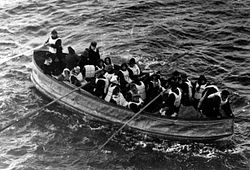

Sometimes it is hard for us to imagine and fathom the difficult realities of tragedies that have happened in our history. I hope this WebQuest has helped you learn about what happened with the RMS Titanic and how it truly was for the survivors who lived through the trauma.
For further information about the Titanic, explore the following links! The first link may require for you to have a TV provider.